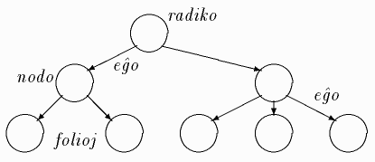
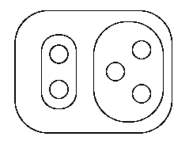
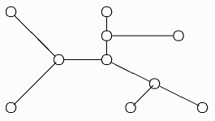
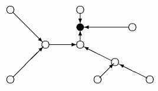
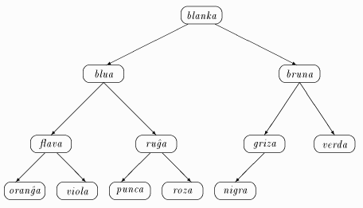

Elradika arbo estas la plej tradicia formo:
valorizo
/| \
/ | esprimo
/ | / | \_______
variablo | esprimo | \
| | | | termo
| | termo | / | \
| | | | termo | faktoro
| | konstanto | | | |
nomo | | | faktoro | |
| | sensignuma | | | variablo
| | nombro | variablo | |
| | | | | | |
| | | | nomo | nomo
| | | | | | |
X := 3 + A * Z 
Vd ankaŭ ekzemplan piramidon (La piramida ordigo).
Estas diversaj manieroj prezenti duuman arbon en komputilo. La plej evidenta uzas ligilliston (rikordojn kaj referencojn):
TIPO arbo = ↑nodo;
nodo = RIKORDO
info: informtipo;
deks, liv: arbo
FINO;
(vd ankaŭ Vektora
prezento de duuma arbo).
VAR a: TABELO [1..n] EL informtipo;
en kiu la idoj de la nodo a[i] estas respektive a[2∗i] kaj a[2∗i+1]; alivorte, la j-a nodo de i-a nivelo havas la indicon 2i−1+j−1. Ekz-e, la vektoro prezentanta la duuman arbon ĵuse (Prezentoj de duuma arbo) desegnitan aspektas tiel:
{blanka, blua, bruna, flava, ruĝa, griza, verda, oranĝa, viola, punca, roza, nigra}